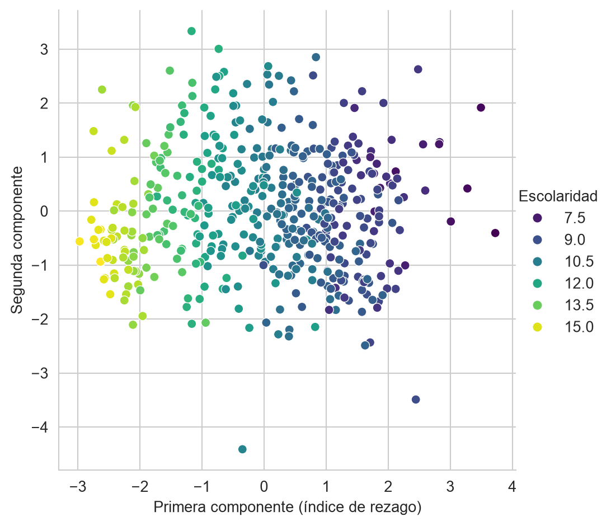
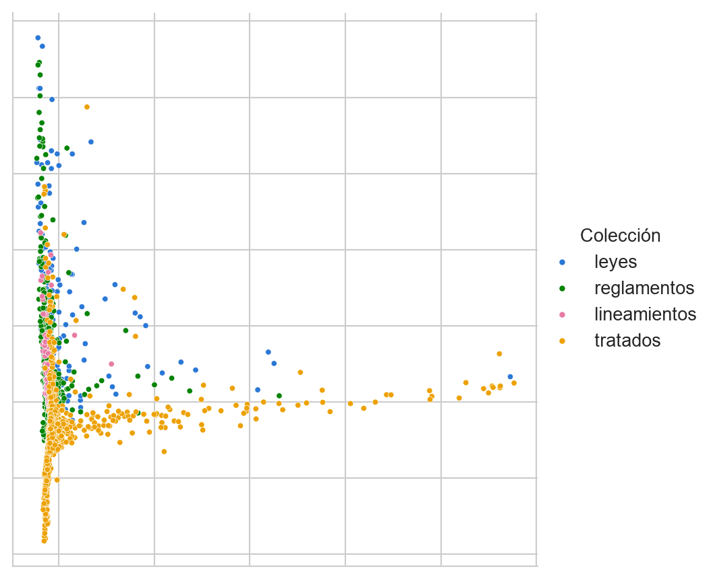
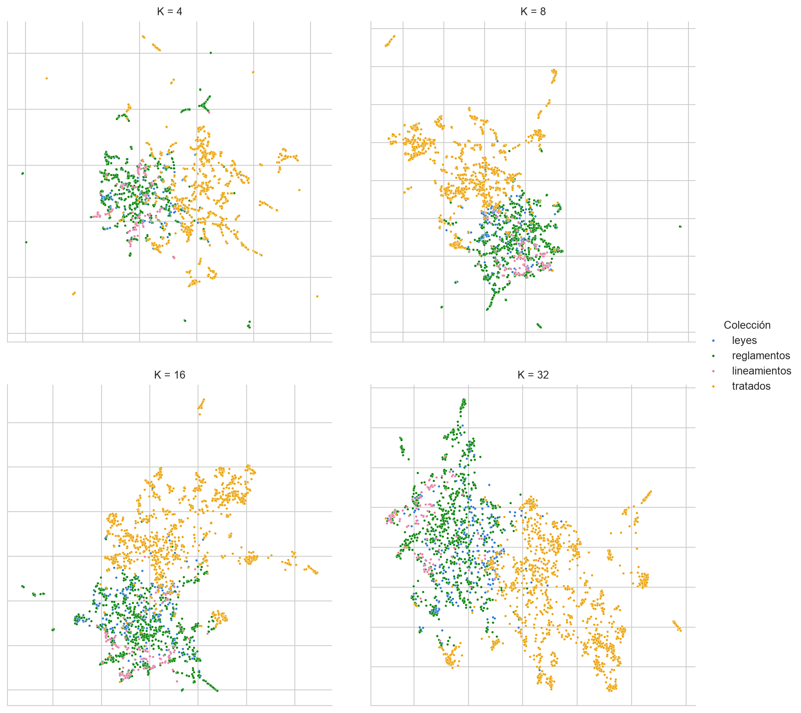
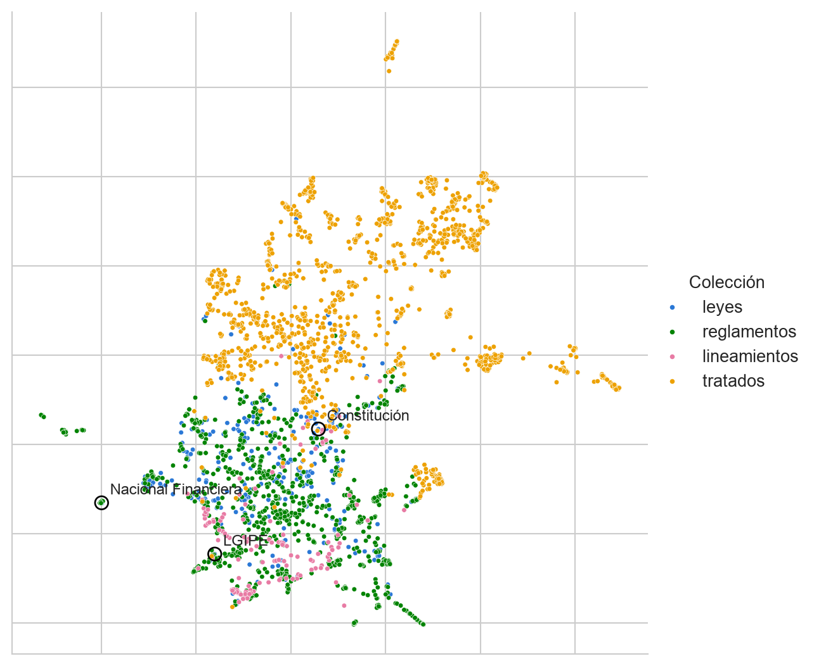

from sklearn.preprocessing import StandardScaler, normalize
from sklearn import decomposition
import umap
import numpy as np
import pandas as pd
from matplotlib import pylab as plt
import seaborn as sns
URL_DATOS = ('https://github.com/INGEOTEC/AprendizajeComputacional/'
'releases/download/datos-v1')
COLECCIONES = ['leyes', 'reglamentos', 'lineamientos', 'tratados']
PALETA_COLECCION = dict(leyes='#2a78d6', reglamentos='#008300',
lineamientos='#e87ba4', tratados='#eda100')13 Reducción de Dimensión
El objetivo de la unidad es aplicar técnicas de reducción de dimensionalidad, para mejorar el aprendizaje y para visualizar los datos
Paquetes usados
13.1 Introducción
Existen ocasiones donde las variables que describen al problema no contribuyen dentro de la solución, o su aporte está dado por otras componentes de la descripción. Esto trae como consecuencia, en el mejor de los casos, que el algoritmo tenga un mayor costo computacional o, en un caso menos afortunado, que tenga un rendimiento menor al que se hubiera obtenido con una mejor representación. Es pertinente mencionar que el caso contrario, el incremento del número de variables, es también un escenario factible y se abordará en otra ocasión.
Reducir la dimensión de un problema es transformar la representación original \(x \in \mathbb R^d\) a una representación \(\hat x \in \mathbb R^m\) donde \(m < d\). Tiene dos usos: mejorar el aprendizaje, pues el objetivo es que la nueva representación \(\hat x\) contenga la información necesaria para realizar la tarea de clasificación o regresión; y visualizar los datos, reduciendo a \(\mathbb R^2\) o \(\mathbb R^3\), donde el objetivo es que se mantengan en la reducción las características de los datos en \(\mathbb R^d\).
La selección de variables, que escoge un subconjunto de las variables originales sin transformarlas, se trató en la Capítulo 4. Este capítulo trata las proyecciones, que construyen variables nuevas a partir de las originales: Análisis de Componentes Principales (PCA) y UMAP.
13.2 Análisis de Componentes Principales
Los métodos de selección de variables (Capítulo 4) requieren un conjunto de entrenamiento de aprendizaje supervisado, por lo que no podrían ser utilizados en problemas de aprendizaje no-supervisado. En esta sección se revisará el uso de Análisis de Componentes Principales (Principal Components Analysis - PCA) para la reducción de dimensión. PCA tiene la firma: \(f: \mathbb R^d \rightarrow \mathbb R^m\) donde \(m < d\)
La idea de PCA es buscar una matriz de proyección \(W^\intercal \in \mathbb R^{m \times d}\) tal que los elementos de \(\mathcal D = \{x_i\}\) sean transformados utilizando \(z = W^\intercal x\) donde \(z \in \mathbb R^m\). El objetivo es que la muestra \(z_1\) tenga la mayor variación posible. Es decir, se quiere observar en la primera característica de los elementos transformados la mayor variación; esto se puede lograr de la siguiente manera.
Si suponemos que \(\mathbf x \sim \mathcal N_d(\mu, \Sigma)\) y \(\mathbf w \in \mathbb R^d\) entonces \(\mathbf w \cdot \mathbf x \sim \mathcal N(\mathbf w \cdot \mu, \mathbf w^\intercal \Sigma \mathbf w)\) y por lo tanto \(\textsf{Var} (\mathbf w \cdot \mathbf x) = \mathbf w^\intercal \Sigma \mathbf w.\)
Utilizando esta información se puede describir el problema como encontrar \(\mathbf w_1\) tal que \(\textsf{Var}(\mathbf z_1)\) sea máxima, donde \(\textsf{Var}(\mathbf z_1) = \mathbf w_1^\intercal \Sigma \mathbf w_1.\) Dado que en este problema de optimización tiene múltiples soluciones, se busca además maximizar bajo la restricción de \(\mid\mid \mathbf w_1 \mid\mid = 1.\) Escribiéndolo como un problema de Lagrange quedaría como: \(\max_{\mathbf w_1} \mathbf w_1^\intercal \Sigma \mathbf w_1 - \alpha (\mathbf w_1 \cdot \mathbf w_1 - 1).\) Derivando con respecto a \(\mathbf w_1\) se tiene que la solución es: \(\Sigma \mathbf w_i = \alpha \mathbf w_i\) donde esto se cumple solo si \(\mathbf w_1\) es un vector propio de \(\Sigma\) y \(\alpha\) es el valor propio correspondiente. Para encontrar \(\mathbf w_2\) se requiere \(\mid\mid \mathbf w_2 \mid\mid = 1\) y que los vectores sean ortogonales, es decir, \(\mathbf w_2 \cdot \mathbf w_1 = 0.\) Realizando las operaciones necesarias se encuentra que \(\mathbf w_2\) corresponde al segundo vector propio y así sucesivamente.
13.2.1 Ejemplo - Un índice de condiciones sociales
Una aplicación clásica de PCA en política pública es resumir varios indicadores sociales en un solo número por unidad territorial, para ordenar las unidades y focalizar programas. El índice de marginación del Consejo Nacional de Población (CONAPO) es el ejemplo más conocido en México. En sus ediciones anteriores a 2020 se calculó con la primera componente principal de un conjunto de indicadores de educación, vivienda, ingreso y tamaño de localidad, y la edición 2020 cambió al método de Distancias Ponderadas al cuadrado (DP2), entre otras razones porque los resultados de PCA no eran comparables en el tiempo (Consejo Nacional de Población 2023). Esta sección construye una versión didáctica de un índice de este tipo con la primera componente principal. No es el índice oficial, pues usa sólo cuatro indicadores censales de los AGEB urbanos de Aguascalientes del conjunto Territorio (Sección B.1.5).
El siguiente código lee los datos, toma los cuatro indicadores censales y descarta los AGEB que tienen algún indicador vacío. En la última línea los indicadores se estandarizan para tener media \(0\) y desviación estándar \(1\), lo que es necesario porque están en escalas diferentes (años de escolaridad y porcentajes).
territorio = pd.read_csv(f'{URL_DATOS}/censo_denue_territorio.csv')
INDICADORES = ['grado_promedio_escolaridad', 'pct_viv_internet',
'pct_sin_servicio_salud', 'pct_jefatura_femenina']
datos = territorio.dropna(subset=INDICADORES)
D = StandardScaler().fit_transform(datos[INDICADORES])El siguiente paso es ajustar PCA. Como hay cuatro indicadores se pueden calcular hasta cuatro componentes, y el atributo explained_variance_ratio_ contiene la proporción de la varianza que explica cada una.
pca = decomposition.PCA(n_components=4).fit(D)
pca.explained_variance_ratio_array([0.4822, 0.3232, 0.1686, 0.026 ])Los pesos de cada componente, es decir, los vectores \(\mathbf w_i\), se encuentran en el atributo components_. Los pesos de la primera componente son los siguientes.
pd.Series(pca.components_[0], index=INDICADORES)grado_promedio_escolaridad 0.695623
pct_viv_internet 0.697966
pct_sin_servicio_salud -0.099411
pct_jefatura_femenina 0.138096
dtype: float64Se usan \(463\) AGEB, pues \(1\) tienen algún indicador vacío. La primera componente explica \(48.2\%\) de la varianza y la segunda \(32.3\%\), por lo que entre las dos conservan \(80.5\%\). En la primera componente el grado promedio de escolaridad y el porcentaje de viviendas con internet tienen pesos de \(0.70\) y \(0.70\), mucho mayores en magnitud que los del porcentaje de población sin servicio de salud (\(-0.10\)) y de hogares con jefatura femenina (\(0.14\)). Es decir, la primera componente mide sobre todo escolaridad y conectividad. La segunda componente, en cambio, tiene sus pesos mayores en la falta de servicio de salud (\(0.71\)) y en la jefatura femenina (\(0.70\)), lo que muestra que esos dos indicadores describen otra dimensión de las condiciones del AGEB.
El signo de una componente principal es arbitrario, pues \(\mathbf w_1\) y \(-\mathbf w_1\) explican la misma varianza. Para que el índice crezca con el rezago, como el índice de marginación, se elige el signo que hace negativo el peso de la escolaridad, y el índice de cada AGEB es su valor en la primera componente con ese signo.
signo = -np.sign(pca.components_[0, 0])
indice = signo * pca.transform(D)[:, 0]El AGEB con el índice más alto, es decir, con más rezago, tiene un grado promedio de escolaridad de \(6.92\) y \(11.6\%\) de viviendas con internet, mientras que el de índice más bajo tiene \(15.36\) y \(100.0\%\). La Figura 13.1 muestra los AGEB en \(\mathbb R^2\) con las dos primeras componentes, coloreados por el grado promedio de escolaridad. Se observa que la escolaridad cambia a lo largo del eje horizontal, que es la primera componente, y no a lo largo del vertical.
Código
Xn = pca.transform(D)
df = pd.DataFrame(dict(x=signo * Xn[:, 0], y=Xn[:, 1],
escolaridad=datos.grado_promedio_escolaridad.to_numpy()))
fig = sns.relplot(df, kind='scatter', x='x', y='y',
hue='escolaridad', palette='viridis')
fig.set(xlabel='Primera componente (índice de rezago)',
ylabel='Segunda componente')
fig._legend.set_title('Escolaridad')
El índice resume cuatro indicadores en uno solo a cambio de perder la información que no está en la primera componente. En este caso esa pérdida es grande, pues la segunda componente explica una parte importante de la varianza y no se refleja en el índice. Además, los pesos dependen de los datos con los que se ajusta PCA, de modo que un índice calculado con otro censo o con otras unidades no es directamente comparable, que es precisamente la limitación que llevó a CONAPO a cambiar de método.
13.3 UMAP: Uniform Manifold Approximation and Projection for Dimension Reduction
En esta sección se presenta el uso de UMAP propuesto por McInnes et al. (2020). UMAP es una técnica no lineal para reducir la dimensión y que con dimensiones bajas (\(d=2\)) permite tener una visualización de los datos. El ejemplo que se realizará es dibujar un mapa de los instrumentos jurídicos federales de México (leyes, reglamentos, lineamientos y tratados) a partir de la matriz de similitud del Atlas de LegalIA, descrita en Sección B.2. En esa matriz, el renglón \(i\) describe al instrumento \(i\) por los instrumentos donde están los textos más parecidos a los suyos (ver Sección B.2.1). Los datos se leen con las siguientes instrucciones y con ellos se arma la matriz densa A.
instrumentos = pd.read_csv(f'{URL_DATOS}/legalia_instrumentos.csv')
similitud = pd.read_csv(f'{URL_DATOS}/legalia_similitud.csv.gz')
n = instrumentos.shape[0]
A = np.zeros((n, n))
A[similitud.origen, similitud.destino] = similitud.pesoCada uno de los \(2670\) instrumentos es un vector de \(2670\) números. Cada renglón suma los fragmentos contados de su instrumento, y estos van de \(3064\) en el caso del Código Civil Federal a unos cuantos, con una mediana de \(28\). Si se usaran los renglones así, la distancia entre dos instrumentos dependería sobre todo de su tamaño. Por eso cada renglón se normaliza para tener norma \(1\), de modo que un código de miles de artículos y un reglamento de veinte quedan comparables y lo que importa es hacia dónde apuntan sus fragmentos y no cuántos son.
X = normalize(A)Con el objetivo de ilustrar la diferencia entre una técnica de proyección lineal como PCA con respecto a una técnica no lineal, la Figura 13.2 presenta la proyección de los instrumentos utilizando PCA, con cada punto coloreado según su colección.
Código
pca = decomposition.PCA(n_components=2).fit(X)
Xn = pca.transform(X)
df = pd.DataFrame(Xn, columns=['x', 'y'])
df['Colección'] = instrumentos.coleccion
fig = sns.relplot(df, kind='scatter', x='x', y='y', s=10,
hue='Colección', hue_order=COLECCIONES,
palette=PALETA_COLECCION)
fig.tick_params(bottom=False, top=False,
left=False, right=False,
labelbottom=False, labelleft=False)
fig.set(xlabel=None, ylabel=None)
Las dos componentes conservan apenas \(1.3\%\) de la varianza de los renglones normalizados. La mayoría de los instrumentos queda amontonada en una región pequeña y sólo unos cuantos se alejan a lo largo de los ejes, por lo que la proyección lineal no deja ver cómo se organizan los instrumentos.
UMAP genera una proyección que intuitivamente trata de preservar la distancia que existe entre los \(K\) vecinos cercanos en la dimensión original como en la dimensión destino. Por este motivo un parámetro importante de UMAP es la cantidad de vecinos, que tiene el efecto de priorizar la estructura global o local de los datos. En el siguiente código se realiza una exploración de este parámetro generando una visualización para \(K=[4, 8, 16, 32].\) Se usan los mismos parámetros que el Atlas de LegalIA, es decir, la distancia coseno (metric='cosine'), min_dist=0.1 y una semilla fija (random_state=0) para que el resultado sea el mismo cada vez que se ejecuta, de modo que las figuras pueden compararse con el atlas interactivo, aunque no tienen que ser idénticas.
df = pd.DataFrame()
for K in [4, 8, 16, 32]:
reducer = umap.UMAP(n_components=2, n_neighbors=K, min_dist=0.1,
metric='cosine', random_state=0)
low_dim = reducer.fit_transform(X)
_ = pd.DataFrame(low_dim, columns=['x', 'y'])
_['Colección'] = instrumentos.coleccion
_['K'] = K
df = pd.concat((df, _))La Figura 13.3 muestra las diferentes visualizaciones cuando el número de vecinos cambia en UMAP. Con pocos vecinos UMAP prioriza la estructura local, por lo que aparecen muchos grupos pequeños y separados. Conforme aumenta \(K\) los grupos pequeños se integran en regiones más amplias. En todos los casos los tratados ocupan una región propia del mapa, separada de la que comparten las otras tres colecciones.
Código
fig = sns.relplot(df, kind='scatter', x='x', y='y', s=5,
hue='Colección', hue_order=COLECCIONES,
palette=PALETA_COLECCION, col='K', col_wrap=2,
facet_kws=dict(sharex=False, sharey=False))
fig.tick_params(bottom=False, top=False,
left=False, right=False,
labelbottom=False, labelleft=False)
fig.set(xlabel=None, ylabel=None)
Que los tratados ocupen una región propia se explica con la matriz. De los \(1367\) tratados, en \(1298\) el instrumento hacia el que apuntan más fragmentos, es decir, A[i].argmax(), es otro tratado. En cambio, esa proporción es de \(48.1\%\) para las leyes, \(69.8\%\) para los reglamentos y \(46.4\%\) para los lineamientos, que por eso se mezclan entre sí en el mapa.
La Figura 13.4 muestra con mayor detalle la visualización con \(K=16\), que es con la que abre el atlas, y marca tres instrumentos. El instrumento hacia el que apuntan más fragmentos de la Constitución es la Ley General de Instituciones y Procedimientos Electorales, y en el caso de la Ley Orgánica de Nacional Financiera es la Ley Orgánica del Banco Nacional de Obras y Servicios Públicos. Este último es un ejemplo de las islas de familias que se observan en el mapa, en este caso las leyes orgánicas de los bancos de desarrollo, cuyos textos son muy parecidos entre sí.
Código
k16 = df[df.K == 16].reset_index(drop=True)
fig = sns.relplot(k16, kind='scatter', x='x', y='y', s=8,
hue='Colección', hue_order=COLECCIONES,
palette=PALETA_COLECCION, height=6)
ax = fig.ax
for clave, etiqueta in [('cpeum', 'Constitución'),
('lgipe', 'LGIPE'),
('lonf', 'Nacional Financiera')]:
i = int(instrumentos.index[instrumentos.clave == clave][0])
ax.scatter(k16.x[i], k16.y[i], s=60, facecolors='none',
edgecolors='black')
ax.annotate(etiqueta, (k16.x[i], k16.y[i]), xytext=(5, 5),
textcoords='offset points', fontsize=9)
fig.tick_params(bottom=False, top=False,
left=False, right=False,
labelbottom=False, labelleft=False)
fig.set(xlabel=None, ylabel=None)
El mapa debe leerse con cuidado. Que dos instrumentos estén cerca dice que tienen textos parecidos, no que estén emparentados jurídicamente, pues la matriz es una heurística (Sección B.2.1). Además, UMAP preserva las vecindades, pero no las distancias entre grupos lejanos, por lo que la separación entre dos regiones distantes del mapa no se interpreta. Finalmente, como lo muestra la Figura 13.3, el dibujo cambia con \(K\) aunque los datos sean los mismos.
TipActividad
La matriz A es dirigida, es decir, en general \(A_{ij} \neq A_{ji}\). Repite el mapa de la Figura 13.4 con la matriz simetrizada \(A + A^\intercal\), normalizando sus renglones de la misma manera, y describe qué cambia. Después repítelo con los renglones de A sin normalizar y explica, con la diferencia de tamaño entre los instrumentos, por qué el mapa resultante es distinto.
13.4 Resumen
Reducir la dimensión es transformar la representación original en una con menos variables, ya sea para mejorar el aprendizaje o para visualizar los datos. A diferencia de la selección de variables (Capítulo 4), que escoge un subconjunto de las variables originales, las proyecciones construyen variables nuevas a partir de ellas. El Análisis de Componentes Principales (Sección 13.2) encuentra las direcciones de mayor varianza y produce una proyección lineal, que también sirve para resumir varios indicadores en un índice, mientras que UMAP (Sección 13.3) busca preservar la vecindad de los datos y puede revelar estructuras que una proyección lineal no muestra. La Figura 13.3 muestra además que el resultado de UMAP depende de sus hiperparámetros, por lo que debe leerse con cautela.
Cuando una visualización sugiere que los datos forman grupos, el paso siguiente es encontrarlos de manera formal, lo que se hace con los métodos de agrupamiento de Capítulo 14.